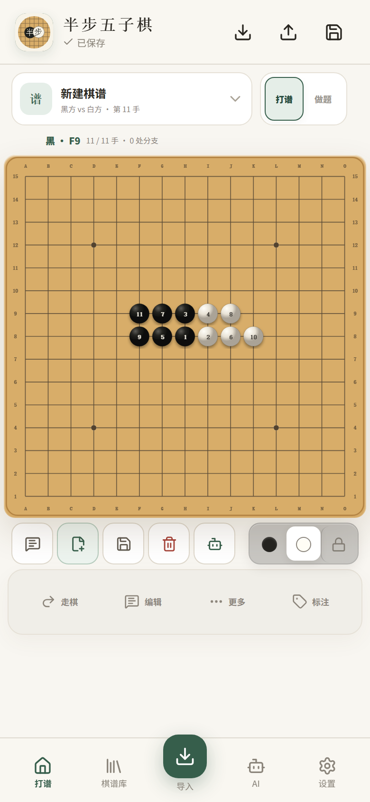
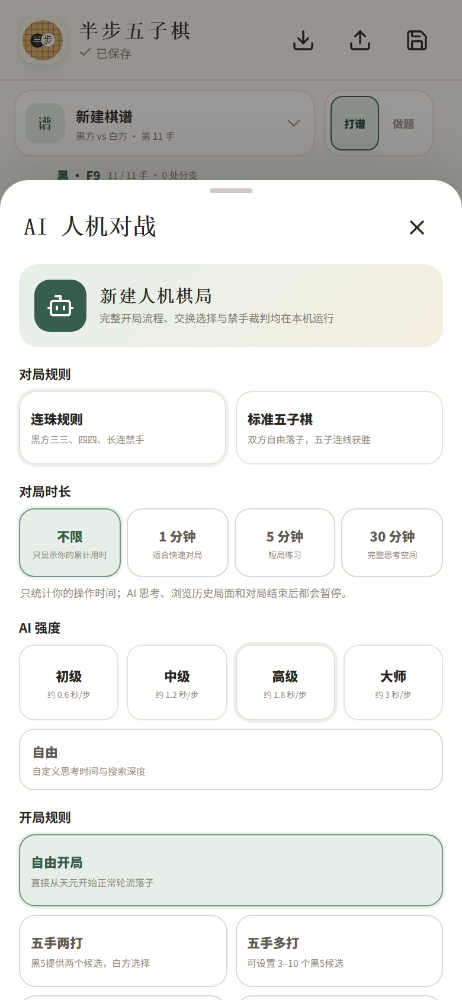
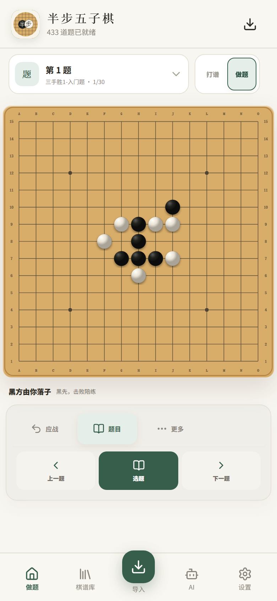
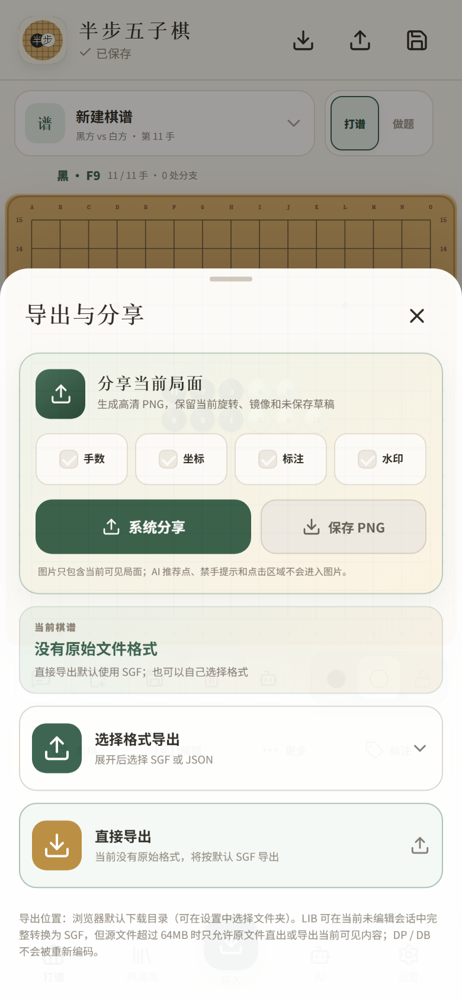

01移动端打谱与变化树
触控落子、前后导航、改着、分支、注释、标注和主线管理，完整保存研究过程。
从记录一盘棋，到训练、分析和分享，主要操作都围绕同一张棋盘完成。

01触控落子、前后导航、改着、分支、注释、标注和主线管理，完整保存研究过程。

02支持连珠或标准五子棋、不同强度、计时、执黑执白，以及五手两打等开局规则。

03内置多套题库，可按题集训练、切换题目、记录完成进度，并整理错题。

04导出 SGF 或完整 JSON，也可生成带坐标、手数和标注的棋盘 PNG，方便交流复盘。